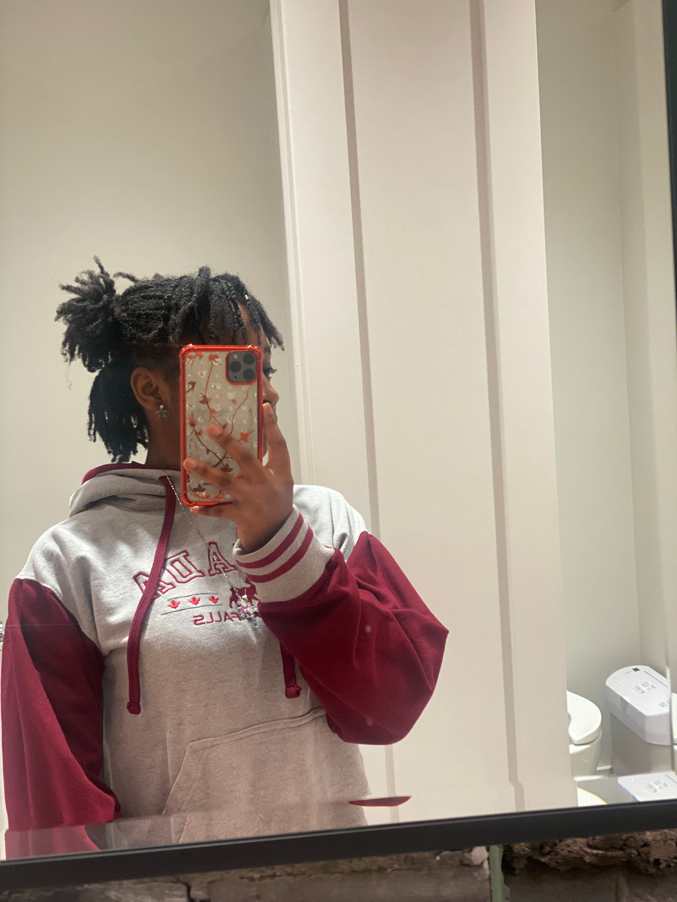

We broke up and came back so many times that I've genuinely lost count. Okay... maybe not completely. I think it was four. Looking back, it's kind of absurd. At the time, every breakup felt final. And somehow it never was.
A collection of moments that still make me smile.
Some memories deserve their own little place.
Put on your headphones for the full experience.
I do.

This was the first pic you sent to me, you looked so peak.
Some moments stay with us. Not because they were important then, but because they became important later.
The moments that never made it into photos.
We broke up and came back so many times that I've genuinely lost count. Okay... maybe not completely. I think it was four. Looking back, it's kind of absurd. At the time, every breakup felt final. And somehow it never was.
The truth is... we were both childish. Stubborn. Sometimes dramatic. Sometimes unreasonable. And somehow we still kept finding our way back to each other.
You always got mad when I kicked someone from the room in CODM. Every single time. I still don't know why you cared more than the person I kicked.
There was one breakup that made me cry. Not because I wanted sympathy. Not because I wanted to be dramatic. It just hurt. And that's how I knew what we had mattered to me.
I'm sorry most of our memories are relationship related but that's basically all we got, we were better together than apart as friends.
That's a strange number, isn't it?
Old enough to feel grown. Young enough to still be figuring everything out.
I know life hasn't been easy lately.
I know you've been carrying things that most people never see.
And I hope that somewhere among all the difficult days, there are still memories that make you smile.
Even if some of those memories happen to include me.
And happy 18th birthday.
Whatever comes next, I'm rooting for you.
The End.